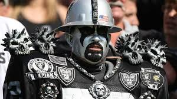

By: Tommy

If you are like me, then you love to watch sports. All sports. Like, I enjoy watching basketball and soccer and baseball and NASCAR and formula 1 and golf and horse racing and professional video gaming and baseball and cricket (even though I still have no idea what is happening) and gymnastics and… well you get the idea; sports are great. What makes sports great is watching someone who has subjected their whole life to being as perfect as possible at doing this one thing in one specific way and they only get one chance to do it. Like watching a volleyball player try hit a ball into a square more times than the ball hits in their square, but they spent years learning how to hit it in the perfect way. It is beautiful to watch the pinnacle of human achievement like this and see the struggle of human that are so good at something, that the winner is sometime just determined by whoever got lucky or is less hurt more so than by who is actually better at their peak.
I prefer team sports over individual because they are more complex to understand why something happened. In Individual sports, competitors either do better than their opponents or they do not, end of story. Teams on the other hand, could have won because of the mysterious idea of team chemistry or because they have one guys who is so much better than everyone else that he is unstoppable or the team’s 10th best guy could be better than the other teams 10th best guy which was exploitable enough to win or something completely different. Team sports also introduce the idea of missed appropriation of the rules as just “part of the game”. (the idea that doing something is against the rules only when you get caught by the 3-6 guys whose job it is to watch all 10-22 players at once). The rule book is also larger in team sports because you have to have a rule for each type of player on the court. Take tennis for example, in 1 on 1 there are rules for the server and the non-server. But in 2 on 2, you have to also make rules for the teammate of the server and the person who is not the returner. So you have the exact same game, but by adding in the elements of teams, the complexity goes up drastically.
The most complex, major sport in the world is American football (I may not understand cricket, but I am guessing it is like a simpler form of baseball). Teams of 11 on 11 have specific rules for at least 7 different positions in every situation the rules for the quarterback, center, linemen, receivers, and running/half/full backs each have a set of rule for how/where they have to stand before the play starts and then each has their own specific set of rules based on where they started the play and what is happening. You then have different rules for the person with the ball which then changes if the ball is given to another player based on how the ball moved from player to player and where the player with the ball is on the field. And that is just the offense. There are simply not enough officials to catch everything and there never will be which is great. Soccer has the same problem, but the rule book is much shorter and easier to understand.
Football is organized chaos for a few seconds followed by a short break to setup and then another few seconds of chaos. We then collect a million different statistics to describe what happens but none of them are really useful alone. Point differential is the final determinant of who wins, but losing by 3 means something different when the final score is 45-42 than when the final score is 9-6. Trying to figure out which combination of stats means what has proven difficult even for analytics firms so this forces spectators to use human intuition to try to determine what each moment means in a game and the predictors they want to use. Watching swimming usually comes down to the stroke and distance and the announces can tell you who will win 9 times out of 10 because the only stat they need is the swimmers’ times from the last race of that stroke and distance. There is no unifying statistic in football that does the same thing. That leaves plenty of room for open discussion about which factors matter more or less and the best way to evaluate a team/game/play/result/statistic. The level of complexity is so high that even the experts in the field don’t have the time or resources to truly evaluate every game and tell you what is going to happen and why. So the next time you go toe to toe with Herbie for the weekend picks just remember, he really doesn’t know enough to be really sure of most of his picks anyways. Which also means his opinion is just as invalid as yours.
Previous: Why spectator sports are great